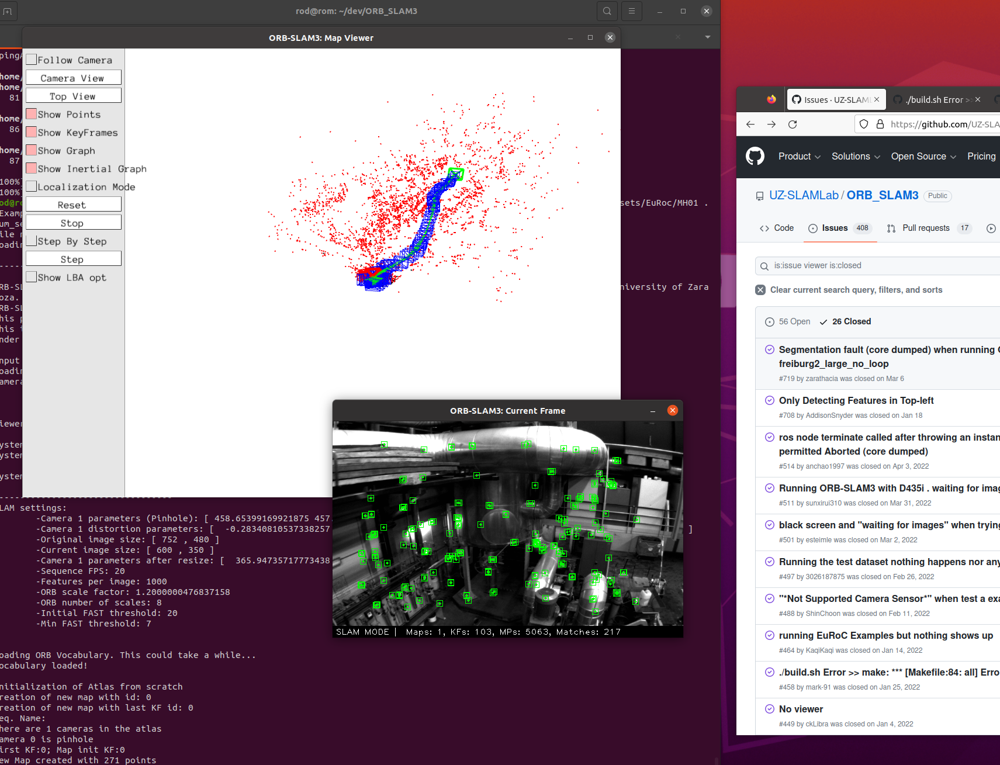

I've been trying to install ORB_SLAM3 for a while now, and I've been running into a lot of issues. I've been following the instructions on the GitHub repository, but I've been running into a lot of issues. I've been trying to install it on my Windows 10 host but was running into problems when building the project.
I then tried to install it on my Ubuntu 20.04 virtual machine finally got it to build. Here are the steps to run monocular ORB_SLAM3 on a fresh installed Ubuntu 20.04 LTS
- Install dependencies
- sudo apt-get install build-essential
- sudo apt-get install cmake git libgtk2.0-dev pkg-config libavcodec-dev libavformat-dev libswscale-dev
- sudo apt-get install python-dev python-numpy libtbb2 libtbb-dev libjpeg-dev libpng-dev libtiff-dev libdc1394-22-dev
- sudo apt-get install libavcodec-dev libavformat-dev libswscale-dev libv4l-dev
- sudo apt-get install libxvidcore-dev libx264-dev
- sudo apt-get install libatlas-base-dev gfortran
- sudo apt-get install libprotobuf-dev protobuf-compiler
- sudo apt-get install libgoogle-glog-dev libgflags-dev
- sudo apt-get install libgphoto2-dev libeigen3-dev libhdf5-dev doxygen
- Install OpenCV 4.5.1
- cd ~
- mkdir dev && cd dev
- git clone https://github.com/opencv/opencv.git
- cd opencv
- git checkout 4.5.1
#define AV_CODEC_FLAG_GLOBAL_HEADER (1 << 22)#define CODEC_FLAG_GLOBAL_HEADER AV_CODEC_FLAG_GLOBAL_HEADER#define AVFMT_RAWPICTURE 0x0020
Save and close the file.
- mkdir build && cd build
- cmake -D CMAKE_BUILD_TYPE=Release -D WITH_CUDA=OFF -D CMAKE_INSTALL_PREFIX=/usr/local ..
- make -j$(nproc)
- sudo make install
- Install Pangolin
- cd ~
- git clone https://github.com/stevenlovegrove/Pangolin.git
- cd Pangolin
- mkdir build && cd build
- cmake .. -D CMAKE_BUILD_TYPE=Release
- make -j$(nproc)
- sudo make install
- Install ORB-SLAM3
- cd ~
- git clone https://github.com/UZ-SLAMLab/ORB_SLAM3.git
- cd ORB_SLAM3
- chmod +x build.sh Before we build we need to make the following changes.
- gedit CMakeLists.txt
- Change line 15 from
# Check C++11 or C++0x supportto# Check C++14 or C++0x support - Change line 17 from
CHECK_CXX_COMPILER_FLAG("-std=c++11" COMPILER_SUPPORTS_CXX11)toCHECK_CXX_COMPILER_FLAG("-std=c++14" COMPILER_SUPPORTS_CXX14) - Change line 19 from
if(COMPILER_SUPPORTS_CXX11)toif(COMPILER_SUPPORTS_CXX14) - Change line 20 from
set(CMAKE_CXX_FLAGS "${CMAKE_CXX_FLAGS} -std=c++11")toset(CMAKE_CXX_FLAGS "${CMAKE_CXX_FLAGS} -std=c++14") - Change line 22 from
message(STATUS "Using flag -std=c++11.")tomessage(STATUS "Using flag -std=c++14.") - Change line 28 from
message(FATAL_ERROR "The compiler ${CMAKE_CXX_COMPILER} has no C++11 support. Please use a different C++ compiler.")tomessage(FATAL_ERROR "The compiler ${CMAKE_CXX_COMPILER} has no C++14 support. Please use a different C++ compiler.")Save and close file.
- gedit ./Examples/Monocular/mono_euroc.cc
- Change line 83 from
ORB_SLAM3::System SLAM(argv[1],argv[2],ORB_SLAM3::System::MONOCULAR, false);toORB_SLAM3::System SLAM(argv[1],argv[2],ORB_SLAM3::System::MONOCULAR, true);
Save and close file.
- sudo ldconfig
- ./build.sh
- Download test datasets
- cd ~
- mkdir -p Datasets/EuRoc
- cd Datasets/EuRoc
- wget -c http://robotics.ethz.ch/~asl-datasets/ijrr_euroc_mav_dataset/machine_hall/MH_01_easy/MH_01_easy.zip
- mkdir MH01
- unzip MH_01_easy.zip -d MH01/
- Run ORB-SLAM3
- cd ~/ORB_SLAM3 Monocular:
- ./Examples/Monocular/mono_euroc ./Vocabulary/ORBvoc.txt ./Examples/Monocular/EuRoC.yaml ~/Datasets/EuRoc/MH01 ./Examples/Monocular/EuRoC_TimeStamps/MH01.txt dataset-MH01_mono Monocular + Inertial:
- ./Examples/Monocular-Inertial/mono_inertial_euroc ./Vocabulary/ORBvoc.txt ./Examples/Monocular-Inertial/EuRoC.yaml ~/Datasets/EuRoc/MH01 ./Examples/Monocular-Inertial/EuRoC_TimeStamps/MH01.txt dataset-MH01_monoi Stereo:
- ./Examples/Stereo/stereo_euroc ./Vocabulary/ORBvoc.txt ./Examples/Stereo/EuRoC.yaml ~/Datasets/EuRoc/MH01 ./Examples/Stereo/EuRoC_TimeStamps/MH01.txt dataset-MH01_stereo Stereo + Inertial:
- ./Examples/Stereo-Inertial/stereo_inertial_euroc ./Vocabulary/ORBvoc.txt ./Examples/Stereo-Inertial/EuRoC.yaml ~/Datasets/EuRoc/MH01 ./Examples/Stereo-Inertial/EuRoC_TimeStamps/MH01.txt dataset-MH01_stereoi
- Validate Estimate vs. Ground Truth
- sudo apt install curl
- cd ~/Desktop
- curl https://bootstrap.pypa.io/2.7/get-pip.py --output get-pip.py
- sudo python2 get-pip.py
- pip2.7 install numpy matplotlib Run and plot ground Truth:
- cd ~/dev/ORB_SLAM3
- ./Examples/Stereo/stereo_euroc ./Vocabulary/ORBvoc.txt ./Examples/Stereo/EuRoC.yaml ~/Datasets/EuRoc/MH01 ./Examples/Stereo/EuRoC_TimeStamps/MH01.txt dataset-MH01_stereo Plot estimate vs. ground truth:
- cd ~/dev/ORB_SLAM3
- python evaluation/evaluate_ate_scale.py evaluation/Ground_truth/EuRoC_left_cam/MH01_GT.txt f_dataset-MH01_stereo.txt --plot MH01_stereo.pdf Open pdf file MH01_stereo.pdf to see plot.
-
Make the follow changes to the file using the command gedit
./modules/videoio/src/cap_ffmpeg_impl.hpp.
Put the following code at the top of the header file.